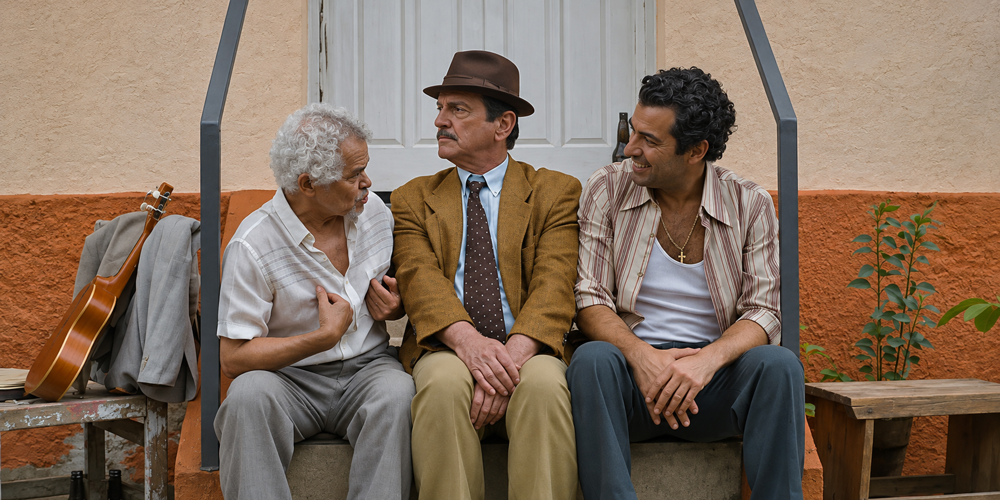

Case 04 · Design gráfico · Cinema
Design gráfico de Saudosa Maloca, longa da Pink Flamingo Filmes baseado nos sambas de Adoniran Barbosa: a placa-título e as marcas, rótulos, cartazes, jornais e letreiros dos anos 50 e 80 que aparecem em cena.

O filme
Saudosa Maloca é uma comédia dramática baseada na obra de Adoniran Barbosa. Nos anos 80, um Adoniran já envelhecido (Paulo Miklos) conta a um jovem garçom histórias de uma cidade que já não existe: a maloca onde vivia com Joca e Mato Grosso, as rodas de samba no Bixiga, o samba na casa do Arnesto. No fim, a demolição da maloca encerra a época.
A história anda entre a São Paulo dos anos 50 e a dos anos 80, e cada época pede suas próprias marcas.
itens, aproximadamente, numa lista com set, cena, quantidade, tamanho e material de cada peça.
levas de arte para impressão, de 7 de dezembro de 2022 a 11 de janeiro de 2023, já com as filmagens começando.
01 · Épocas
A história vai e volta entre os anos 50 e os anos 80, e o bar aparece nas duas épocas. Algumas marcas atravessam o tempo e mudam de cara: a Clara troca o chope em letra cursiva por uma pilsen de letras condensadas, a Refres Frut ganha garrafa família de 2 litros, o cigarro Aurora e o fósforo Maxlumi também acompanham essa evolução.
02 · Marcas
As garrafas, latas, pacotes e maços do bar e da maloca levam marcas inventadas, cada uma com embalagem, slogan e endereço de fábrica de época. Os rótulos de cerveja saíram em 200 cópias para cada época, impressos em adesivo para as garrafas de 600 ml. Os nomes dos comércios da história passaram pelo jurídico da produção antes de ir para a gráfica.
03 · Especulação
A demolição da maloca fecha a história. Antes dela, a cidade já anuncia o que vem: lambes de lançamentos nas ruas, outdoor no contraplano do bar, a planta do prédio, o contrato de compra e venda e a ordem de despejo. Quase tudo assinado pela mesma construtora inventada, a Pereira & Luccini, que também anuncia nos jornais de época.
04 · Sets
A arte gráfica partiu de uma lista com o set, a cena, a quantidade, o tamanho e o material de cada peça, impressa em quatro levas. Cada set tem o seu repertório: o bar Bleque Tais nas duas épocas, a rádio, as ruas e a papelada que passa pela mão dos personagens.
Sistema visual
Os anos 50 são papel creme, ilustração e poucas cores de impressão: vermelho, verde, azul e mostarda. Os anos 80 trocam a ilustração por fotografia e apostam em letras condensadas, preto, petróleo e amarelo.
Cores tiradas das artes finais: Aurora, Clara, Wald, Dona Aurea e Carminha nos anos 50; Clara, Refres Frut e Aurora nos anos 80.
Famílias separadas na pasta de desenvolvimento, por tipo de peça.
As referências foram organizadas em pastas por tipo de peça antes do desenho.
Resultado
As peças foram para a gráfica em quatro levas, entre dezembro de 2022 e janeiro de 2023, e o filme foi rodado em janeiro de 2023. Saudosa Maloca passou pela 47ª Mostra Internacional de Cinema de São Paulo, em outubro de 2023, estreou nos cinemas em 21 de março de 2024, com distribuição da Elo Studios, e hoje está no Prime Video.